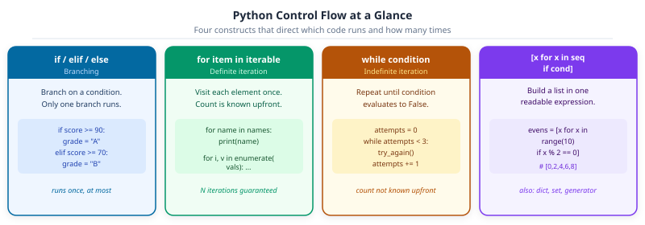

def classify_grade(score: float) -> str:
"""Return letter grade for a numeric score."""
if score >= 90:
return "A: Excellent"
elif score >= 80:
return "B: Good"
elif score >= 70:
return "C: Satisfactory"
elif score >= 60:
return "D: Needs improvement"
else:
return "F: See instructor"Part 2: Language Core (Control Flow & Comprehensions)


DS-MLOps Python Foundations
Python 3.12+ | Author: Anthony Faustine
Your training loop runs 50 epochs. Epoch 47 fails because a score came in as None. The loop should have skipped it. It didn’t – because no one told it what to do when the check fails. Control flow is how you teach code to make decisions.
This notebook covers four constructs: if for decisions, for for known collections, while for indefinite repetition, and comprehensions for one-line transformations. Same scenario as Part 1: student scores, course enrollments, and experiment logs.
Callout markers used throughout this notebook are explained on the book cover page.
Before diving into each construct, here is the map. Python gives you four tools for controlling execution – each answers a different question about what runs and when.

1. Control Flow: if / elif / else & match / case
So far every cell runs its lines from top to bottom, once, in order. Control flow lets you change that: - if / elif / else: run one branch based on a condition - match / case: route structured data to different handlers (Python 3.10+)
Key Concept: match / case (Python 3.10+)
Structural pattern matching goes beyond simple equality checks. It can match on the shape of data, destructuring dicts, lists, and class instances in the same step. Use it when branching on the shape or value of structured data, not just numeric thresholds.
Test the function across the full grade range:
for s in [95.0, 83.5, 71.0, 62.0, 45.0]:
print(f" {s:5.1f} -> {classify_grade(s)}")
# Ternary expression: one-liner for simple binary choices
score = 87.0
status = "pass" if score >= 70 else "fail"
band = "high" if score >= 90 else ("mid" if score >= 70 else "low")
print(f"\n{score} -> {status}, {band}") 95.0 -> A: Excellent
83.5 -> B: Good
71.0 -> C: Satisfactory
62.0 -> D: Needs improvement
45.0 -> F: See instructor
87.0 -> pass, midDecision flow: if / elif / else
flowchart TD
A["evaluate condition"] --> B{if condition1}
B -->|True| C["execute if block"]
B -->|False| D{elif condition2}
D -->|True| E["execute elif block"]
D -->|False| F{else?}
F -->|present| G["execute else block"]
F -->|absent| H["skip all"]
C & E & G & H --> I["continue program"]
style C fill:#EBF5F0,stroke:#059669,color:#065F46
style E fill:#EAF3FA,stroke:#0369A1,color:#0C4A6E
style G fill:#F5F3FF,stroke:#7C3AED,color:#3B0764
match / case: Structural Pattern Matching (Python 3.10+)
match goes beyond simple equality checks. It can destructure the shape of data, extracting values from dicts and lists in one step. Define the routing function first:
# match / case: structural pattern matching (Python 3.10+)
def process_event(event: dict[str, object]) -> str:
"""Route a training event to the right handler."""
match event:
case {"type": "epoch", "epoch": e, "loss": l} if float(str(l)) < 0.05:
return f"Epoch {e}: converged (loss={l:.3f})"
case {"type": "epoch", "epoch": e, "loss": l}:
return f"Epoch {e}: loss={l:.3f}"
case {"type": "error", "message": msg}:
return f"ERROR: {msg}"
case {"type": t}:
return f"Unhandled event type: {t!r}"
case _:
return "Malformed event"Run a variety of event shapes through the dispatcher to see each case arm triggered. The case _: arm is a catch-all that always matches:
events: list[dict[str, object]] = [
{"type": "epoch", "epoch": 1, "loss": 0.823},
{"type": "epoch", "epoch": 20, "loss": 0.041},
{"type": "error", "message": "OOM on GPU 0"},
{"type": "checkpoint"},
{"status": "idle"},
]
for ev in events:
print(process_event(ev))Epoch 1: loss=0.823
Epoch 20: converged (loss=0.041)
ERROR: OOM on GPU 0
Unhandled event type: 'checkpoint'
Malformed eventSequence Patterns in match / case
Sequence patterns match lists and tuples by position. case [first, *rest]: binds the first element to first and the remainder to rest. This is particularly useful in data pipelines where you process variable-length records.
def describe_scores(record: list) -> str:
match record:
case []:
return "no scores"
case [only]:
return f"single score: {only}"
case [first, second]:
return f"two scores: {first} and {second}"
case [first, *rest] if first >= 90:
return f"high-starter ({first}) with {len(rest)} more scores"
case [first, *rest]:
return f"started at {first}, {len(rest)} more scores"
for r in [[], [85], [72, 88], [95, 80, 77], [60, 70, 75, 80]]:
print(f"{r!r:30s} -> {describe_scores(r)}")[] -> no scores
[85] -> single score: 85
[72, 88] -> two scores: 72 and 88
[95, 80, 77] -> high-starter (95) with 2 more scores
[60, 70, 75, 80] -> started at 60, 3 more scores
Activity 1 - Match on HTTP-style Status Codes
Goal: Write a
Goal: Write a
describe_status(code) function using match/case that returns a short description.
describe_status(200) -> '200 OK' describe_status(404) -> '404 Not Found' describe_status(500) -> '500 Server Error' describe_status(301) -> '3xx Redirect' describe_status(999) -> 'Unknown code'
Hint: Use case 2xx patterns are not valid. Use guard conditions instead: case c if 200 <= c < 300.
def describe_status(code: int) -> str:
"""Return a short description for an HTTP-style status code."""
match code:
case _:
return "unknown" # TODO: replace with specific case patterns
for c in [200, 404, 500, 301, 999]:
print(describe_status(c))unknown
unknown
unknown
unknown
unknown2. Control Flow: for Loops
A for loop repeats a block of code once for each item in a collection. It is the primary tool for processing datasets, running training epochs, and iterating over files.
for score in [78, 85, 92]: # repeat once per score
print(score) # output: 78, then 85, then 92The indented block (4 spaces) is the loop body: it runs once per item.
Python for loops iterate over any iterable. The built-ins range(), enumerate(), and zip() cover the most common patterns in data work.
Key Concept: enumerate and zip over manual indexing
for i in range(len(items)) is a red flag. Use enumerate(items) when you need both the index and the value, and zip(a, b) when you need to step two collections in lockstep. Both are lazy: they generate pairs on demand without building a temporary list.
# range(start, stop, step): generates integers lazily (no list in memory)
MAX_EPOCHS: int = 5
loss: float = 1.0
for epoch in range(1, MAX_EPOCHS + 1):
loss *= 0.75
print(f" Epoch {epoch}/{MAX_EPOCHS} loss={loss:.4f}") Epoch 1/5 loss=0.7500
Epoch 2/5 loss=0.5625
Epoch 3/5 loss=0.4219
Epoch 4/5 loss=0.3164
Epoch 5/5 loss=0.2373enumerate() pairs each element with its index, counting from start=1 by default (or any integer you choose), eliminating the need for manual i += 1 counters:
# enumerate(): loop with automatic index; avoids manual counter variables
students: list[str] = ["Alice", "Carol", "Dan", "Bob"]
print("Leaderboard:")
for rank, name in enumerate(students, start=1):
print(f" #{rank} {name}")Leaderboard:
#1 Alice
#2 Carol
#3 Dan
#4 Bobzip() stitches two or more iterables together element-by-element. Pairs stop when the shortest input is exhausted. Build a dict from two parallel lists using dict(zip(keys, values)):
# zip(): iterate two or more iterables in lockstep
# strict=True raises ValueError if the iterables have different lengths
names: list[str] = ["Alice", "Bob", "Carol"]
scores: list[float] = [92.0, 74.5, 88.0]
print("Score sheet:")
for name, score in zip(names, scores, strict=True):
grade = "pass" if score >= 70 else "fail"
print(f" {name:<8} {score:5.1f} {grade}")
# Build a dict from two parallel lists
metric_names: list[str] = ["accuracy", "precision", "recall"]
metric_vals: list[float] = [0.923, 0.911, 0.934]
report: dict[str, float] = dict(zip(metric_names, metric_vals, strict=True))
print()
print(f"Report: {report}")Score sheet:
Alice 92.0 pass
Bob 74.5 pass
Carol 88.0 pass
Report: {'accuracy': 0.923, 'precision': 0.911, 'recall': 0.934}tqdm: Progress Bars for Long Loops
When a loop processes thousands of files or training examples, you need to know how long it will take. tqdm wraps any iterable and displays a live progress bar with elapsed time, rate, and ETA, with zero code changes to the loop body:
pip install tqdm # if not already installedfrom tqdm import tqdm
# Wrap any iterable with tqdm() - the loop body is unchanged
scores: list[float] = []
for i in tqdm(range(1_000), desc="Simulating scores", unit="rec"):
scores.append(50 + (i % 50)) # dummy computation
print(f"Generated {len(scores)} scores, mean = {sum(scores) / len(scores):.1f}")
# tqdm also works with enumerate and zip
labels: list[str] = ["pass" if s >= 70 else "fail" for s in tqdm(scores, desc="Labelling", leave=False)]
print(f"pass rate: {labels.count('pass') / len(labels):.1%}")Generated 1000 scores, mean = 74.5pass rate: 60.0% Activity 2 - Training Log with enumerate and zip
Goal: Print a formatted training summary using enumerate and zip.
Setup:epochs = [1, 2, 3, 4, 5]train_loss = [0.95, 0.72, 0.54, 0.41, 0.33]val_loss = [0.98, 0.76, 0.58, 0.47, 0.39]
Steps:
1. Use zip to pair train_loss and val_loss and iterate them together.
2. Use enumerate (starting from 1) to add an epoch counter.
3. Print each row as: Epoch 1/5 | train=0.950 val=0.980.
4. After the loop, print the epoch where val_loss was lowest.
Expected output (last line): Best epoch: 5 (val_loss=0.390)
3. Control Flow: while, break, continue
A while loop repeats a block as long as a condition is True. Unlike for (which iterates a fixed collection), while runs an indefinite number of times until either the condition becomes False or a break statement is hit.
loss = 1.0
while loss > 0.05: # keep running until loss is small enough
loss *= 0.7 # shrink loss by 30% each iterationUse while when you don’t know in advance how many iterations are needed: waiting for convergence, retrying a failing operation, or consuming a data stream.
break: exit the loop immediatelycontinue: skip the rest of this iterationelseon a loop: runs only if nobreakwas hit
Key Concept: while is for indefinite loops; for is for known collections
Use for when you know the collection to iterate. Use while when you don’t know how many iterations you need: training until convergence, reading until EOF, retrying until success. Every while loop needs either a condition that eventually becomes False or an explicit break – otherwise it runs forever.
# while: train until convergence or budget exhausted
loss: float = 1.0
epoch: int = 0
MAX_EPOCHS: int = 30
THRESHOLD: float = 0.05
while loss > THRESHOLD and epoch < MAX_EPOCHS:
loss *= 0.7
epoch += 1
print(f"Stopped at epoch {epoch}: loss={loss:.4f}")
print(f"Converged: {loss <= THRESHOLD}")Stopped at epoch 9: loss=0.0404
Converged: Truebreak and continue
break exits the innermost loop immediately. Use it when a sentinel value or error condition means further iteration is pointless:
# break: exit the loop immediately when a sentinel is found
readings: list[float | None] = [36.5, 36.9, 37.4, None, 38.1, 37.8]
clean: list[float] = []
for r in readings:
if r is None:
print("Sensor error : stopping collection")
break
clean.append(r)
print(f"Clean readings: {clean}")Sensor error : stopping collection
Clean readings: [36.5, 36.9, 37.4]continue skips the rest of the current iteration and jumps to the next one. Ideal for filtering bad data without a nested if/else. The else clause on a loop runs only if no break occurred:
# continue: skip the rest of this iteration and move to the next
raw: list[object] = [85.0, "n/a", None, 92.0, "", 78.5, -1.0, 95.0]
valid: list[float] = []
for item in raw:
if not isinstance(item, int | float) or float(str(item)) < 0:
continue # skip bad items
valid.append(float(str(item)))
print(f"Valid scores: {valid}")
# loop else: runs only when the loop was NOT exited via break
required_fields: list[str] = ["name", "gpa", "major"]
record: dict[str, str] = {"name": "Alice", "gpa": "3.95", "major": "CS"}
for field in required_fields:
if field not in record:
print(f"Missing required field: {field!r}")
break
else:
print("All required fields present")Valid scores: [85.0, 92.0, 78.5, 95.0]
All required fields present Activity 3 - Early-Stopping Loop
Goal: Implement a training loop that stops when the validation loss stops improving.
Setup:val_losses = [0.95, 0.80, 0.65, 0.61, 0.60, 0.61, 0.63, 0.65]
Steps:
1. Use a while loop to iterate through val_losses.
2. Track the best loss seen so far. When the current loss is greater than the best, increment a patience counter; when it improves, reset patience to 0.
3. break when patience reaches 2 (two epochs without improvement).
4. Print the epoch at which training stopped and the best val_loss achieved.
Expected output: Stopped at epoch 7 | best val_loss=0.600
4. Comprehensions
A comprehension builds a new collection by transforming or filtering an existing one, all in a single expression. It replaces the verbose for + .append() pattern:
# Loop version (3 lines):
squares = []
for n in range(5):
squares.append(n ** 2) # [0, 1, 4, 9, 16]
# Comprehension (1 line, identical result):
squares = [n ** 2 for n in range(5)]Comprehensions are faster than equivalent loops and are considered idiomatic Python.
Key Concept: Concise, Readable Collection Construction
Comprehensions build new collections by transforming or filtering an iterable in a single expression. They are faster than equivalent for + .append() loops and are idiomatic Python.
| [expr for x in it if cond] | list |
| {k: v for x in it if cond} | dict |
| {expr for x in it if cond} | set |
| (expr for x in it if cond) | generator (lazy, no list in memory) |
Key Concept: Comprehensions are for simple transformations; loops are for complex logic
A list comprehension [f(x) for x in items if cond(x)] is readable when the filter and transform are each one expression. When you need multiple steps, early returns, or side effects, write a for loop. Nested comprehensions beyond two levels hurt readability – that’s the signal to refactor.
raw_scores: list[float] = [78.0, 85.5, 92.0, 88.5, 95.0, 67.0, 81.0]
# Transform: min-max normalise to [0, 1]
lo, hi = min(raw_scores), max(raw_scores)
normed: list[float] = [(s - lo) / (hi - lo) for s in raw_scores]
print(f"Normalised: {[round(n, 2) for n in normed]}")
# Filter: keep only passing scores
passing: list[float] = [s for s in raw_scores if s >= 70]
print(f"Passing : {passing}")
# Filter + transform: label each score
labels: list[str] = [f"{s:.0f} (pass)" if s >= 70 else f"{s:.0f} (FAIL)" for s in raw_scores]
print(f"Labelled : {labels}")Normalised: [0.39, 0.66, 0.89, 0.77, 1.0, 0.0, 0.5]
Passing : [78.0, 85.5, 92.0, 88.5, 95.0, 81.0]
Labelled : ['78 (pass)', '86 (pass)', '92 (pass)', '88 (pass)', '95 (pass)', '67 (FAIL)', '81 (pass)']A two-clause comprehension flattens a nested collection. Read [s for batch in batches for s in batch] left-to-right: “outer loop, inner loop, collect s”:
# Flatten a nested structure with a two-clause comprehension
batches: list[list[float]] = [[85.0, 91.0], [74.0, 88.5], [95.0, 79.0]]
flat: list[float] = [s for batch in batches for s in batch]
print(f"Flattened : {flat}")Flattened : [85.0, 91.0, 74.0, 88.5, 95.0, 79.0]Dict, Set, and Generator Comprehensions
The [...] syntax extends to dicts ({k: v for ...}), sets ({expr for ...}), and lazy generators ((expr for ...)):
students: list[dict[str, object]] = [
{"name": "Alice", "score": 92.0, "major": "CS"},
{"name": "Bob", "score": 74.5, "major": "Math"},
{"name": "Carol", "score": 88.0, "major": "CS"},
{"name": "Dan", "score": 61.0, "major": "Physics"},
]
# Dict comprehension: build a name -> score lookup
score_lookup: dict[str, float] = {str(s["name"]): float(str(s["score"])) for s in students}
print(f"Lookup : {score_lookup}")
# Dict comprehension with filter: honours students only
honours: dict[str, float] = {str(s["name"]): float(str(s["score"])) for s in students if float(str(s["score"])) >= 80}
print(f"Honours: {honours}")Lookup : {'Alice': 92.0, 'Bob': 74.5, 'Carol': 88.0, 'Dan': 61.0}
Honours: {'Alice': 92.0, 'Carol': 88.0}Set comprehensions deduplicate automatically. Generator expressions compute values lazily: they use O(1) memory regardless of input size, making them ideal inside sum(), any(), and all():
students: list[dict[str, object]] = [
{"name": "Alice", "score": 92.0, "major": "CS"},
{"name": "Bob", "score": 74.5, "major": "Math"},
{"name": "Carol", "score": 88.0, "major": "CS"},
{"name": "Dan", "score": 61.0, "major": "Physics"},
]
# Set comprehension: unique majors
majors: set[str] = {str(s["major"]) for s in students}
print(f"Majors : {sorted(majors)}")
# Generator expression: lazy evaluation; ideal inside sum/any/all
total: float = sum(float(str(s["score"])) for s in students)
any_fail: bool = any(float(str(s["score"])) < 70 for s in students)
all_pass: bool = all(float(str(s["score"])) >= 60 for s in students)
print(f"Mean : {total / len(students):.1f}")
print(f"Any fail (<70): {any_fail}")
print(f"All pass (>=60): {all_pass}")Majors : ['CS', 'Math', 'Physics']
Mean : 78.9
Any fail (<70): True
All pass (>=60): True
Activity 4 - Cohort Score Report
Goal: Using a single comprehension for each, produce the outputs below from
Goal: Using a single comprehension for each, produce the outputs below from
records.
records = [
{'name': 'Alice', 'scores': [88, 92, 85]},
{'name': 'Bob', 'scores': [62, 70, 58]},
{'name': 'Carol', 'scores': [91, 95, 89]},
]
# 1. List of averages (one float per student)
averages = [82.33, 63.33, 91.67]
# 2. Dict mapping name -> average (rounded to 2 dp)
avg_map = {'Alice': 88.33, 'Bob': 63.33, 'Carol': 91.67}
# 3. Set of unique student names who scored >= 80 average
top = {'Alice', 'Carol'}
records: list[dict[str, object]] = [
{"name": "Alice", "scores": [88, 92, 85]},
{"name": "Bob", "scores": [62, 70, 58]},
{"name": "Carol", "scores": [91, 95, 89]},
]
# TODO: 1. list of averages
averages: list[float] = ...
# TODO: 2. name -> average dict
avg_map: dict[str, float] = ...
# TODO: 3. set of names with average >= 80
top: set[str] = ...
print(f"averages: {averages}")
print(f"avg_map : {avg_map}")
print(f"top : {top}")averages: Ellipsis
avg_map : Ellipsis
top : Ellipsisitertools.batched() (Python 3.12) splits any iterable into fixed-size chunks without loading everything into memory. It replaces manual sliding-window loops in data pipelines.
from itertools import batched
student_ids = list(range(1, 22)) # 21 students
for batch_num, batch in enumerate(batched(student_ids, 5), start=1):
print(f"Batch {batch_num}: {list(batch)}")Batch 1: [1, 2, 3, 4, 5]
Batch 2: [6, 7, 8, 9, 10]
Batch 3: [11, 12, 13, 14, 15]
Batch 4: [16, 17, 18, 19, 20]
Batch 5: [21] Pro Tip: batched() for Chunked Processing
batched(iterable, n) yields tuples of at most n items. The last batch may be shorter. Use it for API rate-limiting, mini-batch gradient descent, or processing large CSV files in chunks: for rows in batched(csv_reader, 1000): process(rows).
Capstone: Monte Carlo Pi Estimation
This activity ties together everything from Part 1 and Part 2: variables, lists, for loops, random numbers, functions, and comprehensions, to estimate the value of π using a simulation technique called Monte Carlo integration.
The idea
Imagine a unit circle (radius = 1) inscribed in a 2×2 square. A random point (x, y) with x, y ∈ [−1, 1] falls inside the circle if x² + y² ≤ 1.
The ratio of the circle’s area to the square’s area is π/4. If we throw millions of random points and count how many land inside the circle, the proportion converges to π/4, so π ≈ 4 × (hits / total).
┌──────────────┐
│ · ● · │ ● inside circle → hit
│ ● ● │ · outside → miss
│ circle │
│ ● ● │
│ · ● · │
└──────────────┘
π/4 ≈ hits/totalThis is a real technique used in finance, physics, and ML for problems that are too complex to solve analytically.
Step 1: Write a helper that checks whether a point is inside the unit circle:
import math
def in_unit_circle(x: float, y: float) -> bool:
"""Return True if (x, y) lies inside the unit circle (radius = 1)."""
return x**2 + y**2 <= 1.0Step 2: Simulate random points and count how many land inside the circle. random.seed() makes results reproducible. Always set a seed before any simulation:
import random
random.seed(42) # fix seed for reproducibility
N_POINTS: int = 1_000_000
inside: int = sum(
1
for _ in range(N_POINTS)
if in_unit_circle(random.uniform(-1, 1), random.uniform(-1, 1)) # noqa: S311
)
pi_estimate: float = 4 * inside / N_POINTS
print(f"Points : {N_POINTS:,}")
print(f"Hits (inside): {inside:,}")
print(f"pi estimate : {pi_estimate:.5f}")
print(f"math.pi : {math.pi:.5f}")
print(f"Error : {abs(pi_estimate - math.pi):.5f}")Points : 1,000,000
Hits (inside): 785,061
pi estimate : 3.14024
math.pi : 3.14159
Error : 0.00135Step 3: See how the estimate improves as N grows: the law of large numbers at work:
import math
import random
random.seed(0)
for n in [100, 1_000, 10_000, 100_000, 1_000_000]:
hits = sum(
1
for _ in range(n)
if in_unit_circle(random.uniform(-1, 1), random.uniform(-1, 1)) # noqa: S311
)
est = 4 * hits / n
error = abs(est - math.pi)
print(f" n={n:>9,} pi={est:.5f} error={error:.5f}") n= 100 pi=3.28000 error=0.13841
n= 1,000 pi=3.02000 error=0.12159
n= 10,000 pi=3.14480 error=0.00321
n= 100,000 pi=3.13056 error=0.01103
n=1,000,000 pi=3.14178 error=0.00019
What you just used
-
Variables & types:
N_POINTS: int,pi_estimate: float -
Functions:
in_unit_circle()with type hints - for loop: iterating N times, building results
-
Comprehension:
sum(1 for _ in range(n) if …) -
random module:
seed()for reproducibility,uniform()for sampling -
math module:
math.pias ground truth
This exact pattern (sample randomly, count outcomes, estimate a ratio) appears in A/B testing, Bayesian inference, and reinforcement learning.
Further Reading
| Resource | Why it matters |
|---|---|
| PEP 636: Structural Pattern Matching | Official tutorial for match/case, with worked examples from the Python core team |
| Ramalho, L. (2022). Fluent Python, 2nd ed. O’Reilly. | Chapter 10 covers pattern matching in depth, including class patterns and guards |
Real Python: Python for Loops |
Clear treatment of enumerate, zip, and the iterator protocol behind every loop |
| Real Python: List Comprehensions | When to use comprehensions vs explicit loops, and how to avoid making them unreadable |
Summary
| Concept | Key rule |
|---|---|
match/case |
Structural pattern matching on values, dicts, lists (3.10+) |
enumerate / zip |
Always prefer these over manual index counters |
while / break / continue |
For indefinite loops, early exit, and skipping bad data |
| Comprehensions | [expr for x in it if cond]; use generators (...) inside sum() / any() / all() |
Next: 03-python-patterns.ipynb, covering functions, lambdas, *args/**kwargs, dataclasses, modules, exception handling, and file I/O with pathlib.